HTTP协议(HyperText Transfer Protocol，超文本传输协议)是互联网上应用最为广泛的一种网络协议。
所有的WWW文件都必须遵守这个标准。
HTTP是一个基于TCP/IP通信协议来传递数据（HTML 文件, 图片文件, 查询结果等）。
一、套接字概念
跨Internet的主机间通讯时，在建立通信连接的每一端，进程间的传输要有两个标志：
IP地址和端口号，合称为套接字地址(socket address)
客户机套接字地址定义了一个唯一的客户进程
服务器套接字地址定义了一个唯一的服务器进程
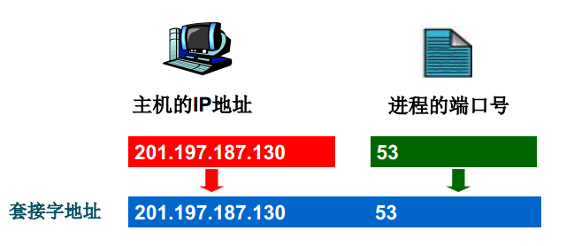
Socket: 套接字，进程间通信IPC的一种实现，允许位于不同主机（或同一主机）上不同进程之间进行通信和数据交换，SocketAPI出现于1983年，4.2 BSD实现
Socket API：封装了内核中所提供的socket通信相关的系统调用
Socket Domain：根据其所使用的地址
AF_INET：Address Family，IPv4
AF_INET6：IPv6
AF_UNIX：同一主机上不同进程之间通信时使用
Socket Type：根据使用的传输层协议
SOCK_STREAM：流，tcp套接字，可靠地传递、面向连接
SOCK_DGRAM：数据报，udp套接字，不可靠地传递、无连接
SOCK_RAW: 裸套接字,无须tcp或tdp,APP直接通过IP包通信
套接字相关的系统调用：
socket(): 创建一个套接字
bind()：绑定IP和端口
listen()：监听
accept()：接收请求
connect()：请求连接建立
write()：发送
read()：接收
close(): 关闭连接
相关通信过程如下图：
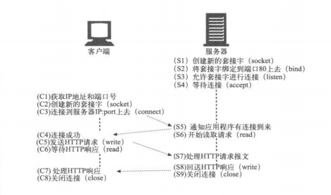
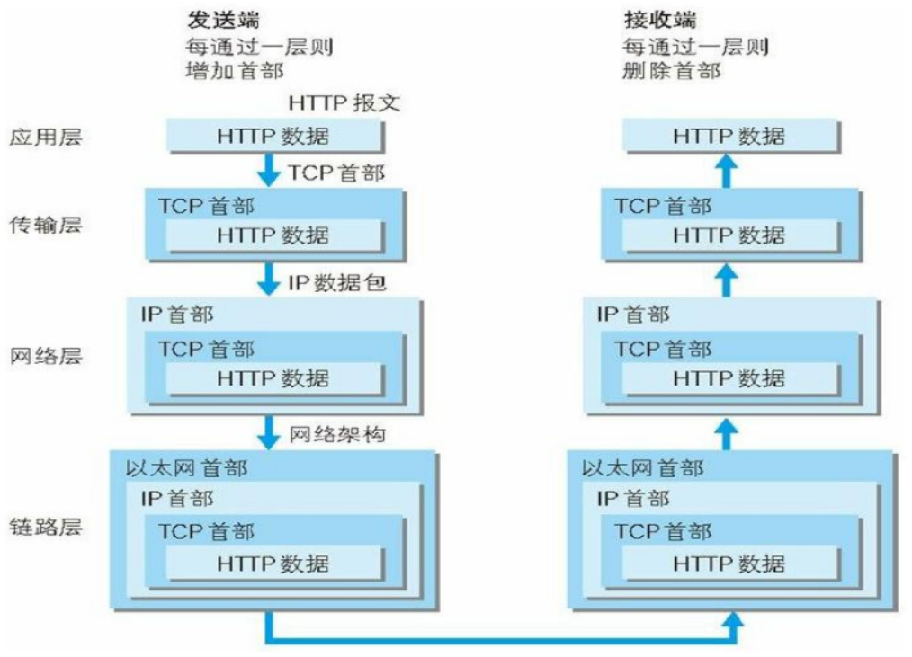
二、HTTP相关术语
http: Hyper Text Transfer Protocol, 80/tcp
html: Hyper Text Markup Language 超文本标记语言，编程语言
示例：
1 | <html> |
CSS: Cascading Style Sheet 层叠样式表
js: javascript
MIME: Multipurpose Internet Mail Extensions:多用途互联网邮件扩展
是设定某种扩展名的文件用一种应用程序来打开的方式类型，当该扩展名文件被访问的时候，浏览器会自动使用指定应用程序来打开。多用于指定一些客户端自定义的文件名，以及一些媒体文件打开方式。
配置文件：/etc/mime.types
格式：major/minor
text/plain
text/html
text/css
image/jpeg
image/png
video/mp4
application/javascript
参考：http://www.w3school.com.cn/media/media_mimeref.asp
URI(Uniform Resource Identifier)统一资源标识，分为URL和URN
URN: Uniform Resource Naming，统一资源命名
示例： P2P下载使用的磁力链接是URN的一种实现
magnet:?xt=urn:btih:660557A6890EF888666
URL: Uniform Resorce Locator，统一资源定位符，用于描述某服务器某特定资源位置
URN与URL区别：
URN如同一个人的名称，而URL代表一个人的住址。换言之，URN定义某事物的身份，
而URL提供查找该事物的方法。URN仅用于命名，而不指定地址
URL的组成
格式：
1 | <scheme>://<user>:<password>@<host>:<port>/<path>;<params>?<query>#<frag> |
schame:方案，访问服务器以获取资源时要使用哪种协议
user:用户，某些方案访问资源时需要的用户名
password:密码，用户对应的密码，中间用：分隔
Host:主机，资源宿主服务器的主机名或IP地址
port:端口,资源宿主服务器正在监听的端口号，很多方案有默认端口号
path:路径,服务器资源的本地名，由一个/将其与前面的URL组件分隔
params:参数，指定输入的参数，参数为名/值对，多个参数，用;分隔
query:查询，传递参数给程序，如数据库，用？分隔,多个查询用&分隔
frag:片段,一小片或一部分资源的名字，此组件在客户端使用，用#分隔
示例：
1 | http://www.lvpeixin.tech:8080/images/logo.jpg |
HTTP的历史
目前主流使用的http版本有1.1版本及2.0版本
http/1.1：1997年1月
引入了持久连接（persistent connection），即TCP连接默认不关闭，可以被多个请求复用，
不用声明Connection: keep-alive。对于同一个域名，大多数浏览器允许同时建立6个持久连接
引入了管道机制（pipelining），即在同一个TCP连接里，客户端可以同时发送多个请求，
进一步改进了HTTP协议的效率
新增方法：PUT、PATCH、OPTIONS、DELETE
同一个TCP连接里面，所有的数据通信是按次序进行的。服务器只能顺序处理回应，
前面的回应慢，会有许多请求排队，造成”队头堵塞”（Head-of-line blocking）
为避免上述问题，两种方法：一是减少请求数，二是同时多开持久连接。网页优化技巧，
比如合并脚本和样式表、将图片嵌入CSS代码、域名分片（domain sharding）等
HTTP 协议不带有状态，每次请求都必须附上所有信息。请求的很多字段都是重复的，浪费带宽，影响速度
Spdy：2009年,谷歌研发,解决 HTTP/1.1 效率不高问题
http/2.0：2015年
头信息和数据体都是二进制，称为头信息帧和数据帧
复用TCP连接，在一个连接里，客户端和浏览器都可以同时发送多个请求或回应，
且不用按顺序一一对应，避免了“队头堵塞“,此双向的实时通信称为多工（Multiplexing）
引入头信息压缩机制（header compression）,头信息使用gzip或compress压缩后再发送；
客户端和服务器同时维护一张头信息表，所有字段都会存入这个表，生成一个索引号，不发送同样字段，
只发送索引号，提高速度
HTTP/2 允许服务器未经请求，主动向客户端发送资源，即服务器推送（server push）
三、HTTP工作机制
工作机制：
http请求：http request
http响应：http response
一次http事务：请求<–>响应
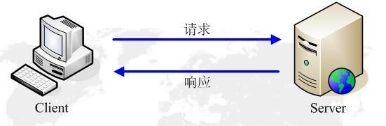
http协议：stateless 无状态
服务器无法持续追踪访问者来源
解决http协议无状态方法:
cookie 客户端存放
session 服务端存放
Cookie
HTTP 是一种无状态协议。协议自身不对请求和响应之间的通信状态进行保存。也就是说在 HTTP 这个级别，
协议对于发送过的请求或响应都不做持久化处理。这是为了更快地处理大量事务，确保协议的可伸缩性，
而特意把 HTTP 协议设计成如此简单的。可是随着 Web 的不断发展，很多业务都需要对通信状态进行保存。
于是引入了 Cookie 技术。使用 Cookie 的状态管理Cookie 技术通过在请求和响应报文中写入 Cookie 信息来控制
客户端的状态。Cookie 会根据从服务器端发送的响应报文内的一个叫做 Set-Cookie 的首部字段信息，通知客户端
保存Cookie。当下次客户端再往该服务器发送请求时，客户端会自动在请求报文中加入 Cookie 值后发送出去。
服务器端发现客户端发送过来的 Cookie 后，会去检查究竟是从哪一个客户端发来的连接请求，然后对比服务器上
的记录，最后得到之前的状态信息
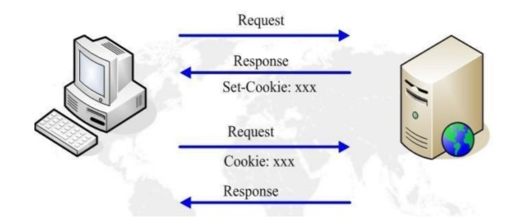
Web资源：web resource
一个网页由多个资源构成，打开一个页面，会有多个资源展示出来，但是每个资源都
要单独请求。因此，一个“Web 页面”通常并不是单个资源，而是一组资源的集合
静态文件：无需服务端做出额外处理
文件后缀：.jpg, .html, .txt, .js, .css, .mp3, .avi
动态文件：服务端执行程序，返回执行的结果
文件后缀：.asp, .php, .jsp
提高HTTP连接性能
并行连接：通过多条TCP连接发起并发的HTTP请求
持久连接：keep-alive,长连接，重用TCP连接，以消除连接和关闭的时延,以事务个数和时间来决定是否关闭连接
管道化连接：通过共享TCP连接发起并发的HTTP请求
复用的连接：交替传送请求和响应报文（实验阶段）
串行连接：
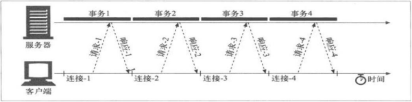
并行连接：
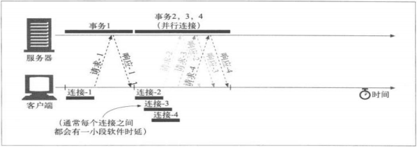
串行、持久连接和管道化连接
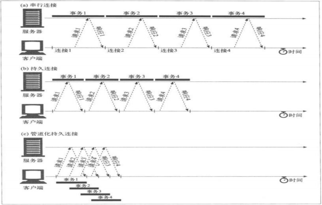
四、HTTP请求过程及相应报文格式
一次完整的http请求处理过程
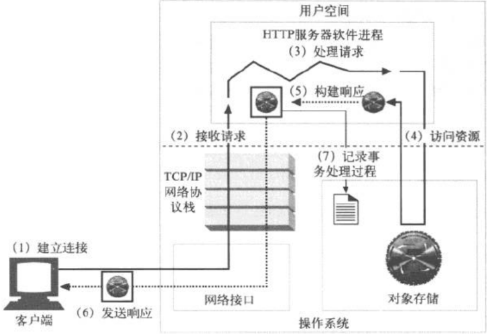
建立连接：接收或拒绝连接请求
接收请求：接收客户端请求报文中对某资源的一次请求的过程
Web访问响应模型（Web I/O）
- 单进程I/O模型：启动一个进程处理用户请求，而且一次只处理一个，多个请求被串行响应
- 多进程I/O模型：并行启动多个进程,每个进程响应一个连接请求
- 复用I/O结构：启动一个进程，同时响应N个连接请求
实现方法：多线程模型和事件驱动
多线程模型：一个进程生成N个线程，每线程响应一个连接请求
事件驱动：一个进程处理N个请求 - 复用的多进程I/O模型：启动M个进程，每个进程响应N个连接请求，同时接收M*N个请求
处理请求：服务器对请求报文进行解析，并获取请求的资源及请求方法等相关信息，根据方法，资源，
首部和可选的主体部分对请求进行处理
元数据：请求报文首部
HEADERS 格式 name:value
示例：1
2Host: www.magedu.com 请求的主机名称
Server: Apache/2.4.7Method: HTTP常用请求方式
GET、POST、HEAD、PUT、DELETE、TRACE、OPTIONS访问资源：服务器获取请求报文中请求的资源web服务器，即存放了web资源的服务器，
负责向请求者提供对方请求的静态资源，或动态运行后生成的资源资源放置于本地文件
系统特定的路径：DocRoot1
2
3DocRoot /var/www/html
/var/www/html/images/logo.jpg
http://www.lvpeixin.tech/images/logo.jpgweb服务器资源路径映射方式：
a. docroot
b. alias
c. 虚拟主机docroot
d. 用户家目录docroot构建响应报文：一旦Web服务器识别除了资源，就执行请求方法中描述的动作，并返回响应报文。
响应报文中 包含有响应状态码、响应首部，如果生成了响应主体的话，还包括响应主体响应实体：如果事务处理产生了响应主体，就将内容放在响应报文中回送过去。
响应报文中通常包括：
描述了响应主体MIME类型的Content-Type首部
描述了响应主体长度的Content-Length
实际报文的主体内容URL重定向：web服务构建的响应并非客户端请求的资源，而是资源另外一个访问路径
永久重定向：http://www.360buy.com
临时重定向：http://www.taobao.comMIME类型：Web服务器要负责确定响应主体的MIME类型。多种配置服务器的方法可将MIME类型与资源管理起来
魔法分类：Apache web服务器可以扫描每个资源的内容，并将其与一个已知模式表(被称为魔法文件)进行匹配， 以决定每个文件的MIME类型。这样做可能比较慢，但很方便，尤其是文件没有标准扩展名时
显式分类：可以对Web服务器进行配置，使其不考虑文件的扩展名或内容， 强制特定文件或目录内容拥有某个MIME类型
类型协商： 有些Web服务器经过配置，可以以多种文档格式来存储资源。在这种情况下，可以配置Web服务器，使其可以通过与用户的协商来决定使用哪种格式(及相关的MIME类型)”最好”
发送响应报文: Web服务器通过连接发送数据时也会面临与接收数据一样的问题。
服务器可能有很多条到各个客户端的连接，有些是空闲的，有些在向服务器发送数据，
还有一些在向客户端回送响应数据。服务器要记录连接的状态，还要特别注意对持久连接的处理。
对非持久连接而言，服务器应该在发送了整条报文之后，关闭自己这一端的连接。
对持久连接来说，连接可能仍保持打开状态，在这种情况下，服务器要正确地计算Content-Length首部，
不然客户端就无法知道响应什么时候结束了记录日志: 最后，当事务结束时，Web服务器会在日志文件中添加一个条目，来描述已执行的事务
request报文
1 | <method> <request-URL> <version> |
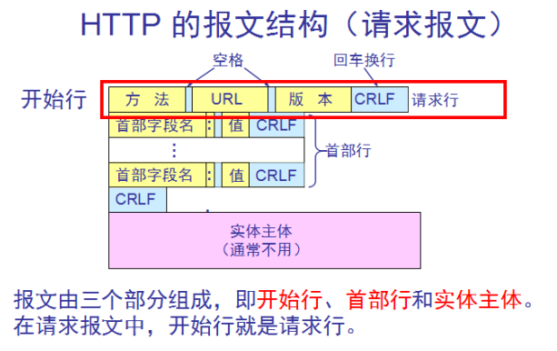
response报文
1 | <version> <status> <reason-phrase> |
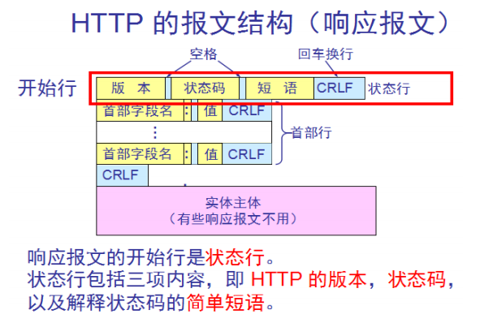
Mehod属性：
请求方法：标明客户端希望服务器对资源执行的动作
GET：从服务器获取一个资源
HEAD：只从服务器获取文档的响应首部
POST：向服务器输入数据，通常会再由网关程序继续处理
PUT：将请求的主体部分存储在服务器中，如上传文件
DELETE：请求删除服务器上指定的文档
TRACE：追踪请求到达服务器中间经过的代理服务器
OPTIONS：请求服务器返回对指定资源支持使用的请求方法
version:
HTTP/
status:
三位数字，如200，301, 302, 404, 502; 标记请求处理过程中发生的情况
reason-phrase：
状态码所标记的状态的简要描述
headers：
每个请求或响应报文可包含任意个首部；每个首部都有首部名称，后面跟一个冒号，而后跟一个可选空格，接着是一个值
entity-body：
请求时附加的数据或响应时附加的数据
五、网站访问量统计
IP(独立IP)：即Internet Protocol,指独立IP数。一天内来自相同客户机IP地址只计算一次，记录远程客户机IP地址的计算机访问网站的次数，是衡量网站流量的重要指标
PV(访问量)： 即Page View, 页面浏览量或点击量，用户每次刷新即被计算一次，PV反映的是浏览某网站的页面数，PV与来访者的数量成正比，PV并不是页面的来访者数量，而是网站被访问的页面数量
UV(独立访客)：即Unique Visitor,访问网站的一台电脑为一个访客。一天内相同的客户端只被计算一次。可以理解成访问某网站的电脑的数量。网站判断来访电脑的身份是通过来访电脑的cookies实现的。如果更换了IP后但不清除cookies，再访问相同网站，该网站的统计中UV数是不变的
网站统计：http://www.alexa.cn/rank/
网站访问统计示例：
甲乙丙三人在同一台通过ADSL上网的电脑上（中间没有断网），分别访问www.lvpeixin.tech 网站，
并且每人各浏览了2个页面，那么网站的流量统计是：
IP: 1 PV:6 UV:1
若三人都是ADSL重新拨号后,各浏览了2个页面，则
IP: 3 PV:6 UV:1
QPS：request per second，每秒请求数
QPS= PV* 页⾯衍生连接次数/ 统计时间（86400）
并发连接数 =QPS * http平均响应时间
峰值时间：每天80%的访问集中在20%的时间里，这20%时间为峰值时间
峰值时间每秒请求数(QPS)=( 总PV数 *页⾯衍⽣连接次数）80% ) / ( 每天秒数 20% )
六、HTTP状态码
HTTP状态码由三个十进制数字组成，第一个十进制数字定义了状态码的类型，后两个数字没有分类的作用。
HTTP状态码共分为5种类型：
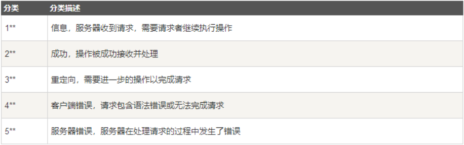
HTTP状态码列表：
1：信息
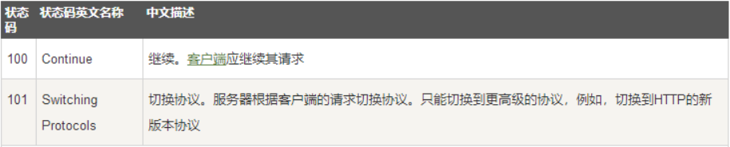
2：成功
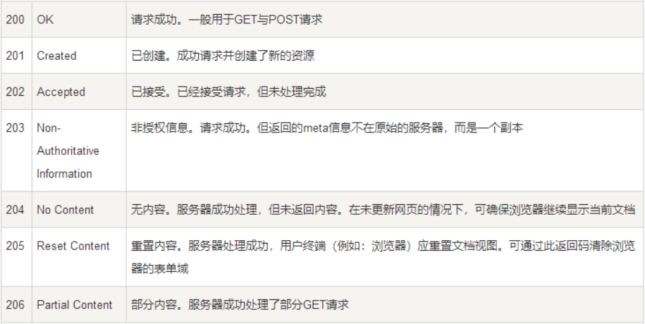
3：重定向
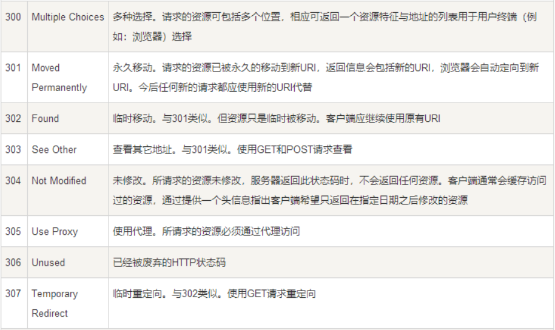
4：客户端错误
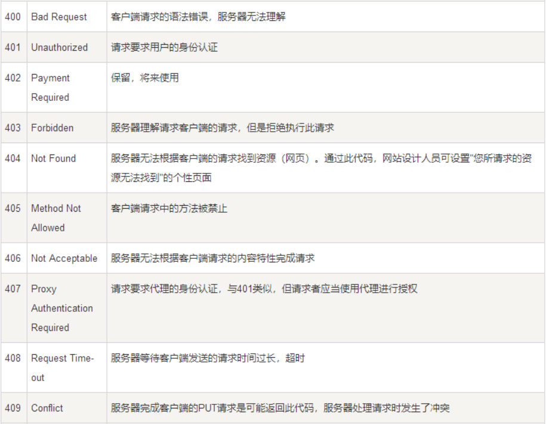
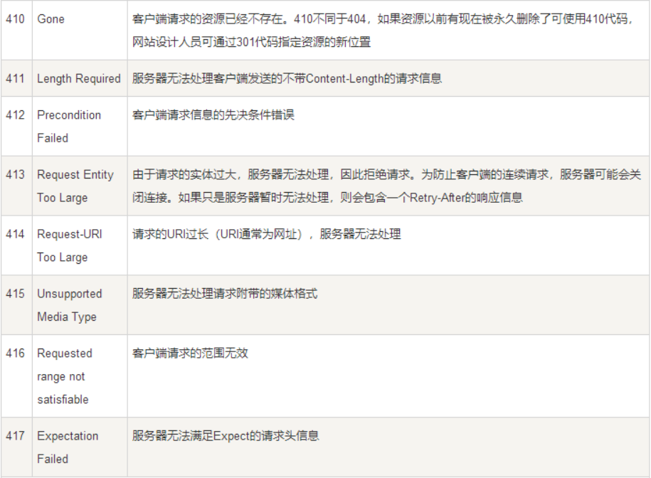
5：服务器错误
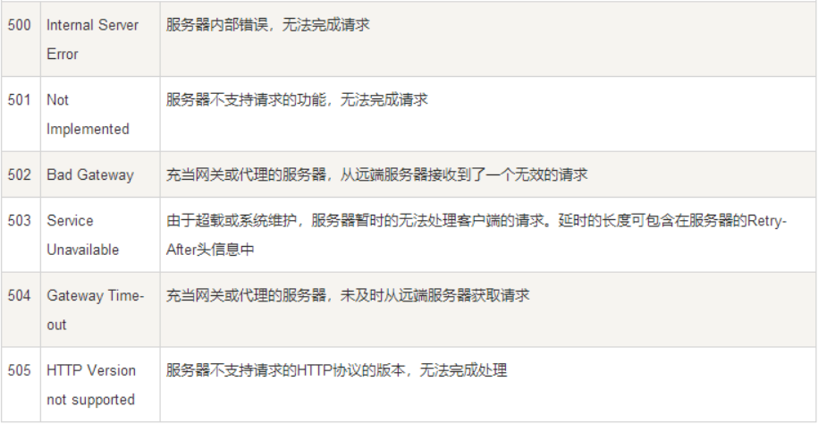